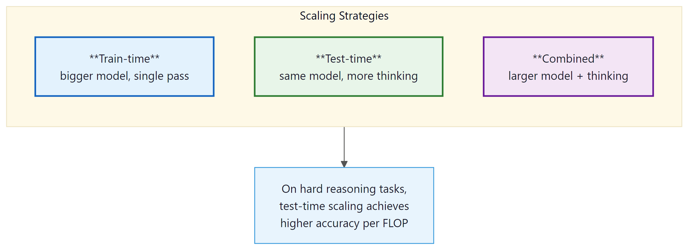
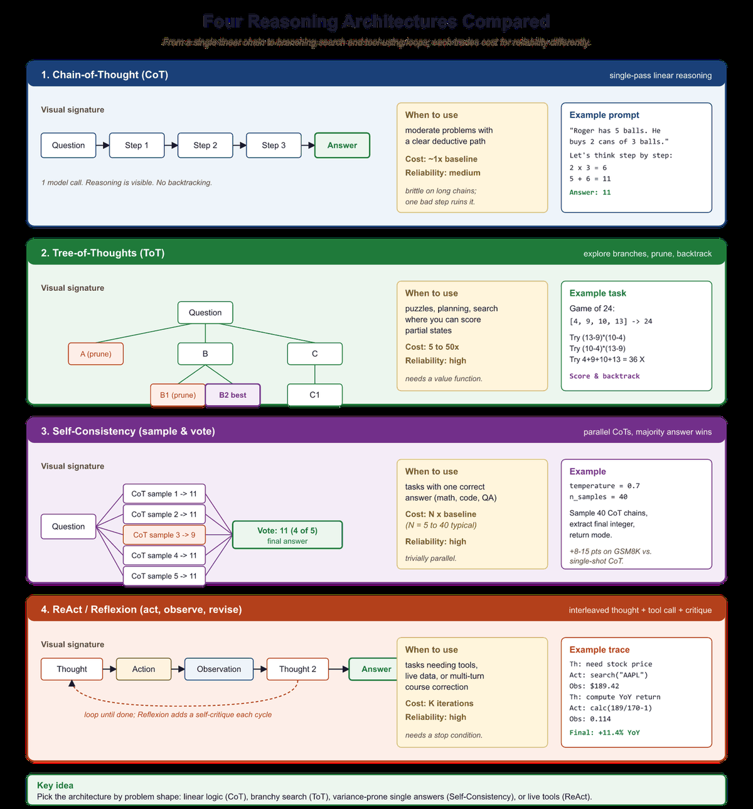

A wise person does not give the same amount of thought to choosing lunch as to choosing a career. Neither should a language model.
Chinchilla, Wisely Allocating AI Agent
Prerequisites
This section assumes familiarity with scaling laws from Section 6.3 (Kaplan and Chinchilla scaling) and basic decoding strategies from Section 5.2 (sampling, temperature). No prior knowledge of reinforcement learning is required.
Why does test-time compute matter? Since 2020, the primary recipe for better language models has been to scale up training: more parameters, more data, more GPU hours. The Kaplan scaling laws (2020) and the Chinchilla correction (2022) formalized this, predicting performance as a smooth function of training compute. But by 2024, the frontier labs were running into practical ceilings: training runs costing hundreds of millions of dollars, energy consumption rivaling small cities, and data supplies approaching exhaustion. Test-time compute offers a complementary scaling axis. Instead of making the model bigger, you let it think longer on each problem. This chapter explores what that means, how it works, and when it is worth the cost. For the train-time scaling baseline, see Section 6.3.

8.1.1 Two Kinds of Compute
Each generated reasoning token expands the model's effective compute by one forward pass without adding any parameters. The model is using its context window as scratch space, which means it can perform multi-step computations that are physically impossible to compute in a single forward pass (the depth of the network is fixed). This is Merrill and Sabharwal's (2024) "Expressive Power of Transformers with Chain of Thought" result: with T CoT tokens, a transformer can simulate a Turing machine for T steps. Without CoT, transformers are bounded by a uniform circuit class. CoT is not just a prompting trick; it is a computational extension that turns a fixed-depth network into a variable-depth one.
Every language model consumes compute in two distinct phases. Understanding the distinction is essential for grasping why reasoning models represent a paradigm shift.
Train-time compute is the total processing power consumed during pretraining data and post-training. This includes the GPU hours spent on next-token prediction over trillions of tokens, followed by supervised fine-tuning and alignment (see Chapter 17). Train-time compute is a one-time investment: once the model weights are set, the cost is amortized across every future inference request. Larger models with more parameters require proportionally more training compute, but serve every user with the same fixed set of weights.
Test-time compute (also called inference-time compute) is the processing power consumed each time the model generates a response. In a standard LLM, this cost is approximately proportional to the number of output tokens: each token requires one forward pass through the network. In a reasoning model, the cost per query can vary enormously. A simple factual question might consume 50 tokens of thinking, while a hard mathematical proof might consume 10,000 or more.
The fundamental innovation of reasoning models is adaptive compute allocation. A standard LLM spends roughly the same amount of computation per output token regardless of problem difficulty. A reasoning model allocates more "thinking tokens" to harder problems and fewer to easy ones. This mirrors how humans operate: you do not spend ten minutes deliberating over what to eat for breakfast, but you might spend hours reasoning through a complex legal contract.
8.1.1.1 The Classical Scaling Regime
The Kaplan scaling laws (2020) established that language model loss decreases as a power law in three variables: number of parameters $N$, dataset size $D$, and total training compute $C$. The Chinchilla correction (Hoffmann et al., 2022) refined this by showing that models should scale parameters and data equally: a model with $N$ parameters should be trained on approximately $20N$ tokens for compute-optimal training.
These laws predict diminishing returns: doubling training compute yields a roughly 10% reduction in loss. To cut loss in half, you need to increase compute by roughly 100x. At the frontier, where training runs already cost \$100M+, this creates severe economic pressure. (For the full derivation and historical context, see Section 6.3.)
8.1.1.2 The Test-Time Scaling Regime
Test-time compute scaling offers a fundamentally different trade-off. Instead of spending more at training to improve the model for all queries equally, you spend more at inference to improve the model's response to a specific query. This has several important properties:
- Per-query cost: Unlike training, which is amortized, test-time compute is a direct per-query cost. A reasoning model that generates 5,000 thinking tokens costs roughly 50x more than a standard model generating 100 tokens.
- Adaptive allocation: The compute can be allocated proportional to difficulty. Easy queries receive minimal thinking; hard queries receive extensive deliberation. This means the average cost per query can be much lower than the worst case.
- Complementary to train-time scaling: A model can be both well-trained and equipped with test-time reasoning. The two forms of scaling are additive, not substitutes. A reasoning model trained with more compute will reason better than a smaller one.
- Immediate deployment: Improving test-time scaling does not require retraining the model. Techniques like best-of-N sampling or tree search can be applied to any model at serving time (though purpose-trained reasoning models perform best).

8.1.2 The Snell et al. Framework
The foundational paper for understanding test-time compute is Snell et al. (2024), "Scaling LLM Test-Time Compute Optimally can be More Effective than Scaling Model Parameters." This work provides the theoretical and empirical framework for answering a simple question: given a fixed compute budget for a single inference query, how should you allocate that budget between model size and test-time reasoning?
8.1.2.1 The Compute-Optimal Inference Problem
Consider a scenario where you have a fixed inference compute budget $C$ FLOPs per query. You can spend this budget in several ways:
- Single pass through a large model: Use all $C$ FLOPs for one forward pass through the largest model that fits within the budget. This is the classical approach.
- Multiple passes through a smaller model: Use a model that requires $C/N$ FLOPs per pass and generate $N$ independent solutions, then select the best one using a preference learning.
- Extended chain-of-thought with a medium model: Use a model that generates a long reasoning trace, spending extra tokens to "think through" the problem before committing to an answer.
- Tree search with a small model: Use a small model to explore a tree of partial solutions, using a reward model to guide the search toward promising branches.
Snell et al. show that the optimal strategy depends critically on task difficulty. Their key finding can be summarized in one sentence: on hard problems where a base model achieves less than 50% accuracy, test-time compute scaling with a smaller model can match or exceed a 14x larger model using the same total FLOPs.
8.1.2.2 Difficulty-Dependent Optimality
| Task Difficulty | Base Model Accuracy | Optimal Strategy | Rationale |
|---|---|---|---|
| Easy | >90% | Single pass, large model | Most samples are already correct; extra compute is wasted |
| Medium | 50% to 90% | Best-of-N (N=8 to 32) | Sampling diversity finds the right answer; reward model selects it |
| Hard | 10% to 50% | Extended CoT or tree search | Structured reasoning explores the solution space more efficiently than independent samples |
| Beyond capability | <1% | Larger model required | If the model lacks necessary knowledge, no amount of thinking helps |
The "think longer vs. be bigger" trade-off has a nice real-world analogy. Imagine you are trying to solve a crossword puzzle. If you are a native English speaker, a hard crossword benefits from thinking longer: more time lets you find connections between clues. But if the crossword is in Japanese and you do not speak Japanese, no amount of extra time will help. You need a fundamentally different skill set (a bigger model, metaphorically speaking). Reasoning models face the same constraint: they can only reason about knowledge they already possess.
8.1.3 Mechanisms of Test-Time Compute
Why does spending more test-time compute help at all? The deep answer is that verification is almost always cheaper than generation. This asymmetry has a name in computational complexity theory (it is the NP vs. coNP distinction restated for neural networks): it is generally faster to check whether a candidate answer is correct than to produce the correct answer from scratch. Every test-time compute mechanism in this section is an exploitation of that asymmetry:
- Best-of-N sampling works because it is cheaper to score N candidates than to generate one perfect answer.
- Reward models in RLHF (Chapter 17.1) work for the same reason: a 7B reward model can rank outputs from a 70B policy because ranking is easier than generating.
- Process reward models (PRMs) push this further by verifying intermediate reasoning steps.
- Self-reflection loops (Section 12.3) work because the same model can critique its own output more reliably than it can produce it correctly the first time.
- RAG faithfulness checking (Section 19.9) is verification of generated text against retrieved sources.
When the asymmetry breaks down (e.g., open-ended creative tasks where verification is as hard as generation), test-time compute helps less. When the asymmetry is strongest (math, code, formal proofs where verification is cheap), test-time compute is transformative, which is why the o-series and DeepSeek-R1 invest heavily in those domains. This is also why RLVR (Section 17.4) works on math and code but not on essay writing.
There are three primary mechanisms through which a model can invest additional compute at inference time. Each represents a different approach to the same goal: generating better answers by spending more processing per query.
8.1.3.1 Extended Chain-of-Thought
The most visible mechanism in modern reasoning models is extended chain-of-thought (CoT). The model generates a long sequence of "thinking tokens" before producing its final answer. These tokens represent the model's internal deliberation: breaking the problem into steps, considering alternatives, checking intermediate results, and sometimes backtracking when it detects an error.
In OpenAI's o1 and o3, these thinking tokens are hidden from the user (the API returns only a summary). In DeepSeek R1, the thinking process is visible, enclosed in <think>...</think> tags. The number of thinking tokens varies adaptively: a simple arithmetic question might generate 50 thinking tokens, while a competition-level math problem might generate 10,000+.
Why thinking tokens help, mechanically. A transformer is a fixed-depth computation graph: each input token passes through the same number of layers regardless of problem difficulty. By generating intermediate reasoning tokens, the model effectively gives itself additional "layers" of processing. Each thinking token feeds back into the context, allowing subsequent computations to build on earlier ones. This converts a fixed-depth computation into an adaptive-depth one, which is necessary for problems that require compositional reasoning (multi-step math, logical deduction, code debugging). The cost is linear in the number of thinking tokens, but the problems it unlocks are qualitatively different from what a single forward pass can solve. For deployment, this means the KV cache grows proportionally with thinking tokens, making efficient memory management crucial.
# Comparing standard vs. reasoning model outputs on the same problem
# Problem: "What is the sum of all prime numbers less than 20?"
# === Standard Model (GPT-4o) ===
# Output: "The prime numbers less than 20 are: 2, 3, 5, 7, 11, 13, 17, 19.
# Their sum is 2 + 3 + 5 + 7 + 11 + 13 + 17 + 19 = 77."
# Tokens generated: ~40
# Time: ~0.5s
# === Reasoning Model (o3-mini) ===
# Hidden thinking tokens (~200 tokens):
# "I need to find all primes less than 20.
# Starting from 2: 2 is prime.
# 3 is prime (not divisible by 2).
# 4 = 2x2, not prime.
# 5 is prime (not divisible by 2 or 3).
# 6 = 2x3, not prime.
# 7 is prime (not divisible by 2, 3, or 5). Actually I only need
# to check up to sqrt(7) ~ 2.6, so just check 2. Not divisible. Prime.
# ...
# [continues for all numbers up to 19]
# Now summing: 2+3=5, 5+5=10, 10+7=17, 17+11=28, 28+13=41,
# 41+17=58, 58+19=77.
# Let me verify: 2,3,5,7,11,13,17,19. Count: 8 primes. Sum: 77."
# Visible output: "The sum of all prime numbers less than 20 is 77."
# Total tokens (thinking + output): ~250
# Time: ~2s
# The reasoning model consumed ~6x more tokens but used a more
# systematic verification process. For this easy problem, both
# get the right answer. The difference becomes dramatic on harder
# problems where the standard model would make errors.8.1.3.2 Best-of-N Sampling
A conceptually simpler approach is to generate $N$ independent solutions and select the best one. This requires a reward model (or verifier) that can score each candidate solution. The approach is "embarrassingly parallel" since all N candidates can be generated simultaneously on separate GPUs.
Performance scales logarithmically with $N$: doubling the number of samples yields a roughly constant improvement in accuracy. This means that going from N=1 to N=8 provides a large boost, but going from N=64 to N=128 provides a much smaller one. Practical systems typically use N between 8 and 64, balancing cost against accuracy.
8.1.3.3 Tree Search
Tree search methods, including Monte Carlo Tree Search (MCTS) and beam search variants, structure the reasoning process as an explicit search over partial solutions. Each node in the tree represents a partial chain of thought, and edges represent possible next reasoning steps. A reward model evaluates the promise of each partial solution, allowing the search to focus compute on the most promising reasoning paths.
Tree search is more compute-efficient than best-of-N for hard problems because it avoids wasting compute on completely wrong solution paths. If the first reasoning step is clearly wrong, tree search can detect this early (via the reward model) and redirect compute to better branches. Best-of-N, by contrast, generates each solution independently and can repeat the same mistakes across many of its N attempts.
We cover tree search in detail in Section 8.5, including AlphaProof's application of MCTS to formal mathematical reasoning.
8.1.3.4 Reasoning Architecture Taxonomy
The term "reasoning model" covers at least four meaningfully different architectural choices. They share the goal of allocating more compute to harder problems, but differ in where the reasoning lives, who can see it, and how it is structured. Understanding these distinctions matters for choosing the right model in production and for interpreting benchmark comparisons.

<think> tags. Tree search (MCTS) generates and scores multiple reasoning branches, requiring a process reward model.Extended Chain-of-Thought is the simplest approach architecturally: the model is the same transformer, but it is trained (or prompted) to produce long reasoning traces before the answer. No structural change to the model is required. The reasoning trace is visible in the output and can be inspected, which makes it useful for debugging. The limitation is that quality depends heavily on training, and a model trained only with prompting (rather than RL) may not learn when to stop reasoning.
Hidden Thinking is the approach used by OpenAI's o-series (o1, o3, o4-mini). The model is trained with reinforcement learning to produce internal reasoning tokens that are not returned in the API response. The thinking tokens are generated autoregressively and consume full KV cache memory during generation, but are stripped before the response is returned. From the user's perspective, the model appears to pause and then return a concise answer. The tradeoff is interpretability: you cannot inspect the reasoning, which makes debugging failures harder. (See Section 8.2 for the o-series architecture in detail.)
Explicit Thinking is the approach used by DeepSeek R1. The model outputs its reasoning trace enclosed in <think>...</think> XML tags, followed by the final answer. The trace is part of the response and can be read, cached, and used for fine-tuning or distillation. DeepSeek-AI (2025) showed that this behavior can emerge from pure reinforcement learning, without supervised chain-of-thought data, using their GRPO training algorithm. Because the trace is visible, it is significantly easier to debug why the model failed on a given problem. The tradeoff is that the full trace appears in the response, which increases output token count and therefore cost.
Tree Search (MCTS-style) represents a fundamentally different approach. Instead of generating one linear reasoning trace, the model generates multiple reasoning branches, scores each with a reward model, and expands the most promising ones. This is similar to Monte Carlo Tree Search as used in game-playing AI (AlphaGo, AlphaProof). The compute cost is substantially higher than linear CoT because multiple partial solutions are generated and evaluated. However, for problems that require finding a specific correct reasoning path among many plausible-looking wrong paths (olympiad mathematics, formal proofs, complex constraint satisfaction), tree search can find solutions that linear CoT misses entirely. A process reward model (Section 7) is essential for tree search to work: you need step-level scoring to prune bad branches early.
8.1.3.5 Best-of-N Sampling: Depth vs. Breadth
Best-of-N (also called rejection sampling) occupies the middle ground between simple extended CoT and expensive tree search. Generate $N$ complete independent reasoning chains from the same model, score each with a reward model, and return the highest-scoring response. The approach is "embarrassingly parallel" since all N chains can be generated simultaneously.
Compute cost is linear in N, but quality improvement is logarithmic. If the probability of any single chain being correct is $p$, then the probability of at least one correct solution among N samples is $1 - (1-p)^N$. This grows quickly at first (N=1 to N=8 gives a large boost) and then saturates (N=64 to N=128 gives a small boost). In practice, N between 8 and 64 covers most of the achievable gain.
import anthropic
import math
def best_of_n(prompt: str, n: int, score_fn) -> str:
"""
Generate N independent responses and return the highest-scoring one.
score_fn: callable that takes a response string and returns a float score.
This could be a rule-based verifier (e.g., check if math answer is numeric
and matches ground truth format) or a separate reward model API call.
"""
client = anthropic.Anthropic()
# Generate N independent responses (in practice, batch these in parallel)
responses = []
for _ in range(n):
msg = client.messages.create(
model="claude-opus-4-5",
max_tokens=1024,
messages=[{"role": "user", "content": prompt}]
)
responses.append(msg.content[0].text)
# Score each response and pick the best
scored = [(score_fn(r), r) for r in responses]
best_score, best_response = max(scored, key=lambda x: x[0])
return best_response
# Example: verifiable math problem
def math_verifier(response: str) -> float:
"""Simple rule-based verifier: does the response contain a numeric answer?"""
import re
# Look for a final answer pattern like "= 42" or "answer is 42"
matches = re.findall(r'(?:=|answer is|result is)\s*([\d,\.]+)', response.lower())
return 1.0 if matches else 0.0
# Expected accuracy improvement with best-of-N
# If single-sample accuracy = 30%, best-of-N accuracy (theoretical ceiling):
p = 0.30
for n in [1, 4, 8, 16, 32, 64]:
ceiling = 1 - (1 - p) ** n
print(f"N={n:3d}: theoretical ceiling = {ceiling:.1%}")
score_fn would call a dedicated reward model. The theoretical ceiling calculation shows that quality gains saturate rapidly beyond N=32.Relationship to rejection sampling in RLHF training. The same best-of-N principle underlies a key step in RLHF: during the supervised fine-tuning warm-up, the model generates multiple responses to each prompt, and the best response (as scored by a reward model) is used as the training target. This is called rejection sampling fine-tuning (RFT) and is how DeepSeek-R1 created its supervised warm-up data. For full RLHF context, see Section 17.1.
When to prefer best-of-N over tree search. Best-of-N is simpler to implement (no partial-solution infrastructure), works with any model without modification, and has predictable cost (exactly N forward passes). Tree search has higher overhead (partial solutions must be tracked, the tree must be maintained, and a PRM is required) but is more compute-efficient on very hard problems. A practical rule: start with best-of-N at N=8 to 32; only move to tree search if best-of-N is still failing.
These reasoning strategies are powerful, but they are not free. Every additional thinking token costs compute, latency, and memory. Before deploying any of these approaches, you need to understand the cost structure and learn how to budget reasoning compute effectively.
8.1.4 The Economics of Thinking
Test-time compute introduces a new dimension to the economics of LLM inference. The cost per query is no longer approximately fixed; it varies with problem difficulty and the chosen reasoning budget.
8.1.4.1 Token Costs
Reasoning models typically charge for both thinking tokens and output tokens, though the pricing structure varies. As of early 2025:
| Model | Input ($/1M tokens) | Output ($/1M tokens) | Thinking Tokens | Notes |
|---|---|---|---|---|
| GPT-4o | \$2.50 | \$10.00 | N/A (no thinking) | Standard model baseline |
| o3-mini | \$1.10 | \$4.40 | Included in output | Low/medium/high reasoning effort |
| o3 | \$10.00 | \$40.00 | Included in output | Highest capability reasoning |
| Claude 3.5 Sonnet | \$3.00 | \$15.00 | N/A (no extended thinking) | Standard model baseline |
| DeepSeek R1 | \$0.55 | \$2.19 | Visible in output | Open-weight alternative |
A critical detail: reasoning models generate far more tokens per query than standard models. A query that costs \$0.001 with GPT-4o (100 output tokens) might cost \$0.05 to \$0.20 with o3 (1,000 to 5,000 thinking + output tokens). The per-token price of reasoning models is sometimes lower, but the total cost per query is typically 5x to 50x higher because of the additional thinking tokens.
8.1.4.2 The Routing Optimization
The wide variance in per-query cost creates a strong incentive for intelligent routing: sending easy questions to cheap, fast models and reserving expensive reasoning models for hard questions. This is not merely a cost optimization; it also improves latency. A simple factual query answered by GPT-4o-mini in 200ms is a better user experience than the same query sent to o3, which might take 5 to 15 seconds as it "thinks" about something that needs no thought.
Effective routing requires a difficulty estimator. This can be as simple as a logistic regression classifier trained on labeled query difficulty, or as sophisticated as a small language model fine-tuned to predict whether a reasoning model would produce a better answer than a standard model. The difficulty estimator itself is cheap to run (typically a single forward pass through a small model) and acts as a gatekeeper that protects the reasoning model from wasting compute on trivial queries.
Reasoning models can dramatically over-think simple questions. If you ask o3 "What is the capital of France?", it will still generate thinking tokens (perhaps 50 to 100) as it considers and verifies the answer. On a per-query basis, this waste is small. But at scale, if 80% of your traffic is simple queries, sending everything to a reasoning model means 80% of your inference budget is wasted on unnecessary deliberation. Always implement routing.
8.1.5 Historical Context: From Chain-of-Thought to Reasoning Models
The reasoning model paradigm did not emerge in a vacuum. It builds on a decade of research into improving language model reasoning, with each advance building on the last.
- 2017: Scratchpad method. Nye et al. showed that letting models write intermediate computation steps (a "scratchpad") improved performance on algorithmic tasks. This was the first evidence that visible intermediate reasoning helps.
- 2022: Chain-of-thought prompting. Wei et al. demonstrated that simply prompting a model to "think step by step" dramatically improved reasoning accuracy. This required no model changes, just a prompt modification.
- 2022: Self-consistency. Wang et al. showed that sampling multiple chain-of-thought solutions and taking a majority vote improved accuracy beyond a single CoT sample. This introduced the idea that more inference-time samples yield better answers.
- 2022: STaR. Zelikman et al. proposed Self-Taught Reasoner, which iteratively fine-tunes a model on its own correct reasoning traces. This bootstrapping approach was an early precursor to training models specifically for reasoning.
- 2023: Process reward models. Lightman et al. (PRM800K) demonstrated that rewarding individual reasoning steps outperforms rewarding only final answers, laying the groundwork for step-level supervision in reasoning models.
- 2024: OpenAI o1. The first commercially deployed reasoning model, trained with reinforcement learning to produce extended chains of thought. Hidden reasoning tokens, RL-trained rather than prompt-elicited.
- 2025: DeepSeek R1. Open-weight reasoning model demonstrating that reasoning behavior emerges from pure RL (R1-Zero) without supervised CoT data. Introduced GRPO training and
<think>token delimiters. - 2025: Reasoning proliferation. Google Gemini 2.5 (thinking mode), Qwen QwQ, Kimi k1.5, o3, o4-mini. Reasoning capabilities become a standard feature rather than a niche capability.
Chain-of-thought prompting is covered in depth in Section 12.2. The reinforcement learning methods used to train reasoning models (Section 17.1, GRPO) connect directly to the preference learning framework in Section 17.1. The scaling laws referenced throughout this section are derived in Section 6.3.
8.1.6 When to Use Test-Time Compute
Not every task benefits from reasoning models. The following decision framework helps practitioners identify where test-time compute provides genuine value versus where it is wasted spend.
Use reasoning models when:
- The task requires multi-step logical reasoning (mathematical proofs, code debugging, legal analysis)
- The problem has a verifiable answer (math, code execution, constraint satisfaction)
- Accuracy is more important than latency (batch processing, offline analysis)
- The base model achieves 20% to 80% accuracy (the "sweet spot" for test-time scaling)
- Errors are expensive (medical reasoning, financial analysis, safety-critical systems)
Use standard models when:
- The task is primarily retrieval or summarization (factual lookups, document summarization)
- Latency matters more than marginal accuracy (real-time chat, autocomplete)
- The base model already achieves >90% accuracy (no room for improvement via thinking)
- The task is creative or subjective (writing, brainstorming) where there is no single "right" answer
- Cost per query is tightly constrained
Show Answer
A three-tier routing strategy:
- Tier 1 (85K queries/day): Route to GPT-4o-mini or similar fast, cheap model. These are FAQ lookups that need no reasoning. Estimated cost: ~\$0.001/query = \$85/day.
- Tier 2 (10K queries/day): Route to GPT-4o or Claude Sonnet. Moderate reasoning is handled well by standard frontier models. Estimated cost: ~\$0.01/query = \$100/day.
- Tier 3 (5K queries/day): Route to o3-mini with medium reasoning effort. Complex multi-step analysis. Estimated cost: ~\$0.05/query = \$250/day.
Total daily cost with routing: ~\$435/day. If all 100K queries were sent to o3-mini: ~\$5,000/day. The routing strategy saves roughly 91% of inference costs. The difficulty classifier can be trained on a labeled sample of 5,000 tickets and typically achieves 90%+ routing accuracy with a simple fine-tuned classifier.
Show Answer
Best-of-N sampling generates N independent solutions, each drawn from the same distribution. Because the samples are independent, the probability of at least one correct solution is 1 - (1-p)^N, where p is the per-sample success probability. This expression grows quickly at first but slows as N increases (logarithmic in effective accuracy gain per additional sample).
Tree search, by contrast, uses information from partial evaluations to guide future computation. If a reward model detects that the first reasoning step is wrong, tree search prunes that entire branch and redirects compute to more promising paths. This means tree search avoids the "repeated mistakes" problem of best-of-N, where many of the N independent samples might fail in the same way. The ability to prune early means that each additional unit of compute is spent more efficiently, particularly on hard problems where the correct solution requires finding a specific sequence of reasoning steps. This conditional information reuse is the property that enables super-logarithmic returns.
Show Answer
A latency-constrained extension would add a wall-clock time bound T_max to the optimization. The key new trade-off is between parallelism and sequential depth:
- Best-of-N sampling is highly parallelizable: with sufficient GPUs, N samples can be generated in the same wall-clock time as one sample. Under a latency constraint, this makes best-of-N attractive because it can use more compute without increasing latency.
- Extended chain-of-thought is inherently sequential: each token depends on all previous tokens. A 5,000-token thinking chain cannot be parallelized and takes 50x longer than a 100-token response. Under tight latency constraints, this limits the maximum reasoning depth.
- Tree search offers a middle ground: different branches can be explored in parallel (like best-of-N), but the depth of each branch can be adapted (like extended CoT).
The modified framework would have three variables: model size N, number of parallel samples K, and maximum sequential reasoning depth D, subject to both C_total = f(N, K, D) and T_wall = g(N, D). This creates a Pareto frontier in (cost, latency, accuracy) space. In practice, the latency constraint often eliminates deep sequential reasoning for interactive applications, pushing the optimal strategy toward parallel best-of-N with moderate model sizes.
For math, logic, and multi-step reasoning, simply adding "Let's think step by step" to your prompt can improve accuracy by 10 to 40%. For production, use structured chain-of-thought with explicit step numbering for more consistent results.
8.1.7 KV Cache Growth in Reasoning Models
One of the most consequential engineering challenges with reasoning models is memory. Every token the model generates, including every thinking token, must be stored in the KV cache during the generation pass. For standard chat models generating 200 to 500 tokens, this is manageable. For reasoning models generating 5,000 to 50,000 thinking tokens, it becomes a serious infrastructure problem. (For the technical mechanics of KV cache and its relationship to inference optimization, see Section 9.2.)
8.1.7.1 The Memory Arithmetic
The KV cache stores key and value tensors for every token in the context. For a transformer with $L$ layers, $H$ key-value heads, and head dimension $d_h$, the KV cache memory per token is:
The factor of 2 accounts for both keys and values. For a model using Grouped Query Attention (GQA), the number of KV heads is smaller than the number of query heads, which reduces this cost proportionally.
Consider a 70B parameter model using GQA with the following typical configuration:
- Layers: 80
- KV heads (GQA): 8 (query heads: 64)
- Head dimension: 128
- Precision: fp16 (2 bytes per element)
KV cache per token: 2 (K+V) x 80 (layers) x 8 (KV heads) x 128 (head dim) x 2 (bytes) = 327,680 bytes per token, or about 320 KB per token.
For 50,000 thinking tokens: 50,000 x 320 KB = 16 GB of KV cache, for a single request. A standard 80 GB A100 can serve roughly 5 concurrent requests of this depth. For comparison, a standard 500-token chat response uses only 160 MB of KV cache (100x less).
If the GQA ratio is larger (e.g., 4 KV heads instead of 8), the memory roughly halves, but the order of magnitude remains the same: long reasoning traces consume gigabytes of GPU memory per request.
8.1.7.2 Serving Implications
These numbers have direct consequences for how reasoning model deployments are architected:
- Throughput collapse: A GPU that serves 200 concurrent standard chat requests can serve as few as 2 to 5 concurrent reasoning requests at maximum thinking depth. This means the effective cost per reasoning request is not just the token count difference but also the opportunity cost of blocked GPU capacity.
- Prefill/decode phase imbalance: In standard inference, the prefill phase (processing the input prompt) is fast, and the decode phase (generating output tokens one by one) is the bottleneck. In reasoning models, the decode phase is enormously extended by thinking tokens, making decode the dominant cost by far.
- Memory-bound vs. compute-bound: With tens of thousands of tokens in the KV cache, attention computation becomes memory-bandwidth-bound. The GPU spends most of its time reading KV cache tensors from HBM rather than performing matrix multiplications. Flash Attention and GQA (see Section 9.2) are therefore especially valuable for reasoning models.
8.1.7.3 Mitigation Strategies
Production deployments use several strategies to manage KV cache growth in reasoning models:
- KV cache eviction after reasoning completes: Once the model emits the separator token (transitioning from thinking to answer), the thinking tokens are no longer needed for future generation. Their KV cache entries can be freed, recovering GPU memory before serving the next request. This is not possible during generation, but can happen between requests.
- Thinking token compression: Research systems have explored compressing or summarizing the KV cache of thinking tokens into a smaller representation. This is an active research area and not yet widely deployed.
- Budget caps: Most reasoning model APIs expose a "reasoning budget" or "thinking effort" parameter. Setting
thinking_tokens=1024caps the maximum KV cache growth and prevents runaway costs on simple queries. OpenAI's o-series exposesreasoning_effort(low, medium, high); DeepSeek R1 supports explicitmax_tokenscaps on the thinking section. Always set a budget cap for production deployments. - Routing: The most effective mitigation is simply not sending easy queries to reasoning models. A difficulty router (see Section 4.2) prevents most requests from incurring thinking token overhead at all.
import anthropic
client = anthropic.Anthropic()
# Using Claude's extended thinking with a budget cap to limit KV cache growth.
# budget_tokens limits the maximum thinking tokens, directly capping memory usage.
response = client.messages.create(
model="claude-opus-4-5",
max_tokens=16000,
thinking={
"type": "enabled",
"budget_tokens": 2048 # cap thinking tokens: reduces memory from ~640 MB to ~26 MB
# for a 70B-equivalent model. Default can be up to 10000.
},
messages=[{
"role": "user",
"content": "Prove that the square root of 2 is irrational."
}]
)
# Response includes both thinking blocks and text blocks
for block in response.content:
if block.type == "thinking":
print(f"Thinking ({len(block.thinking)} chars): {block.thinking[:200]}...")
elif block.type == "text":
print(f"Answer: {block.text}")budget_tokens cap on extended thinking using the Anthropic Python SDK. The cap directly limits KV cache memory growth. For a 70B-equivalent model, cutting thinking from 10,000 to 2,048 tokens reduces per-request KV cache from roughly 3.2 GB to 655 MB.8.1.8 Process Reward Models vs. Outcome Reward Models
Every reasoning strategy that involves evaluation (best-of-N, tree search, and RL training of reasoning models) requires a reward model. Not all reward models are created equal. The choice between an outcome reward model (ORM) and a process reward model (PRM) fundamentally affects what can be achieved.
8.1.8.1 Outcome Reward Models
An ORM scores the final answer only. Given a problem and a complete reasoning trace plus final answer, the ORM outputs a single scalar: how good is this answer? ORMs are relatively easy to train because labels are at the answer level: for math problems, you can automatically verify whether the final numerical answer is correct. For code, you can run tests. The feedback is binary and abundant.
The limitation of ORMs is sparse signal. If a 50-step reasoning chain arrives at the wrong answer, the ORM assigns a low score to the entire chain, but provides no information about which of the 50 steps went wrong. This makes ORMs poorly suited for tree search (you cannot prune a bad branch until you reach the end of it) and for training (the gradient signal does not flow back to the specific reasoning step that caused the error).
8.1.8.2 Process Reward Models
A PRM scores each individual reasoning step. Given a problem and the reasoning trace up to step $k$, the PRM outputs a score for whether step $k$ was correct and productive. This provides dense, step-level supervision: the model receives a signal at every step, not just at the end.
The foundational work is Lightman et al. (2023), "Let's Verify Step by Step," which introduced the PRM800K dataset: 800,000 step-level human annotations on math reasoning traces. Their key finding was that PRMs substantially outperform ORMs on hard math benchmarks, particularly when used for best-of-N selection. Given N candidate solutions, a PRM can score each step of each solution and select the one with the highest minimum step score (the weakest link), which is a more reliable quality signal than the final-answer score alone.
The critical advantage of PRMs for tree search is early pruning. In a tree search over a 20-step math proof, a PRM can detect that step 3 is incorrect and prune the entire subtree rooted at that branch, before generating the remaining 17 steps. An ORM cannot do this: it must wait until a branch is fully completed before scoring it. Since the number of nodes in a tree grows exponentially with depth, early pruning saves enormous amounts of compute. This is why tree search without a PRM is often no better than best-of-N, while tree search with a PRM can be significantly better.
| Property | Outcome Reward Model (ORM) | Process Reward Model (PRM) |
|---|---|---|
| What it scores | Final answer only | Each reasoning step |
| Training data | Answer-level labels (automatic for math/code) | Step-level labels (requires human annotation or automated step verification) |
| Training cost | Low (automatic labels) | High (step annotations are expensive) |
| Signal density | Sparse (one signal per full trace) | Dense (one signal per reasoning step) |
| Useful for best-of-N | Yes (adequate) | Yes (better) |
| Useful for tree search | Poor (cannot prune early) | Excellent (enables early branch pruning) |
| Useful for RL training | Yes (standard RLHF) | Yes (richer gradient signal) |
| Key limitation | Cannot identify which step caused failure | Step-level labels are expensive and may be inconsistent |
8.1.8.3 Automated PRM Training
The cost of step-level human annotation has motivated research into automated PRM training. Two approaches have shown promise:
- Monte Carlo rollout estimation: For a given partial reasoning trace ending at step $k$, generate many complete solutions (rollouts) from step $k$ forward. The fraction of rollouts that arrive at the correct final answer estimates the probability that step $k$ is on a path to success. This probability is used as the step-level label. The DeepSeek-R1 team used this technique to generate PRM training data at scale.
- LLM-as-critic: Use a separate language model to evaluate whether each reasoning step is logically valid. This is cheaper than human annotation but introduces the risk of the critic having the same biases as the generator. Best practice is to use a different model family for the critic than for the generator.
For the RL training context (how PRMs and ORMs connect to PPO, GRPO, and DPO during reasoning model training), see Section 17.1.
Key Takeaways
- Two dimensions of scaling: Train-time compute (bigger models, more data) and test-time compute (more thinking per query) are complementary axes for improving LLM performance.
- Adaptive compute allocation is the core innovation: reasoning models invest more tokens on hard problems and fewer on easy ones, unlike standard models that spend roughly equal compute per token regardless of difficulty.
- Difficulty-dependent optimality: On hard problems (10% to 50% base accuracy), a smaller model with test-time compute can match a 14x larger model. On easy problems (>90% accuracy), test-time compute is wasted.
- Four architectures, one goal: Extended CoT, hidden thinking (o-series), explicit thinking (DeepSeek R1), and tree search (MCTS) all allocate more compute to harder problems but differ in where reasoning lives, who can see it, and how it is structured.
- KV cache is the memory bottleneck: A 70B GQA model generating 50,000 thinking tokens consumes roughly 16 GB of KV cache per request. Budget caps and routing are essential mitigations in production.
- PRMs outperform ORMs for tree search: Process reward models score each reasoning step, enabling early branch pruning. Outcome reward models score only the final answer and cannot prune bad branches before completion.
- Best-of-N is the practical starting point: Logarithmic quality improvement, linear compute cost, no additional infrastructure. Start here before investing in tree search.
- Economics favor routing: Because reasoning models cost 5x to 50x more per query, intelligent routing of easy queries to cheap models and hard queries to reasoning models is essential for production systems.
The optimal allocation of test-time compute remains an active research problem. Snell et al. (2024) showed that compute-optimal inference requires adapting strategy to problem difficulty, but the question of how to estimate difficulty before solving the problem is unresolved. Recent work on "scaling test-time compute with an approximate value function" (DeepMind, 2025) explores using lightweight models to predict how much thinking a query needs. Separately, "s1: Simple Test-Time Scaling" (Muennighoff et al., 2025) demonstrated that even simple budget-forcing techniques can significantly improve reasoning, suggesting that the full complexity of MCTS may not always be necessary. The emerging consensus is that adaptive compute routing, where different queries receive different inference budgets, will become standard in production LLM deployments.
Exercises
What is chain-of-thought (CoT) prompting, and why does asking a model to 'think step by step' improve performance on reasoning tasks? Give an example where CoT helps and one where it does not.
Answer Sketch
CoT prompting instructs the model to generate intermediate reasoning steps before the final answer. It helps because: (1) it breaks complex problems into simpler sub-problems. (2) Each step conditions on previous steps, allowing error detection and correction. (3) It allocates more compute (tokens) to harder problems. Helps: multi-step math ('A train travels 60mph for 2.5 hours, how far?'). Does not help: simple factual recall ('What is the capital of France?') or tasks where the answer is immediate and reasoning adds no value. CoT can actually hurt on simple tasks by introducing unnecessary complexity.
Compare zero-shot CoT ('Let's think step by step') with few-shot CoT (providing worked examples) on 10 grade-school math problems. Which approach achieves higher accuracy, and by how much?
Answer Sketch
Few-shot CoT typically outperforms zero-shot CoT by 5 to 15 percentage points because the worked examples demonstrate the specific reasoning format the model should follow. Zero-shot CoT still significantly outperforms direct answering (by 10 to 30 points). The quality of few-shot examples matters: examples should demonstrate the exact type of reasoning needed and use a consistent format. Poorly chosen examples can actually reduce accuracy.
When a model generates a chain-of-thought, it might reach the correct answer through incorrect reasoning, or the visible reasoning might not reflect the model's actual computation. Explain the 'faithfulness' problem and why it matters for trust in AI systems.
Answer Sketch
Faithfulness means the stated reasoning actually caused the final answer. Research shows models sometimes: (1) reach correct answers despite flawed reasoning steps (lucky cancellation of errors). (2) Generate post-hoc rationalizations rather than genuine reasoning (the answer was determined first, then justified). (3) Arrive at answers through internal computations not reflected in the text. This matters because: users rely on reasoning traces to verify answers; if the traces are unreliable, verification is illusory. For high-stakes applications (medical diagnosis, legal reasoning), unfaithful CoT creates a false sense of transparency.
Compare three structured reasoning approaches: (1) chain-of-thought, (2) tree-of-thought (exploring multiple reasoning paths), and (3) plan-then-execute (outline the approach before solving). For a complex word problem, which approach produces the best results?
Answer Sketch
CoT: linear reasoning, one path forward. Best for straightforward multi-step problems. Tree-of-thought: explores multiple approaches, backtracks from dead ends. Best for problems with multiple valid solution strategies (e.g., game playing, creative problem-solving). Plan-then-execute: first generates a high-level plan, then follows it step by step. Best for problems requiring strategic thinking before detailed computation (e.g., proofs, code design). For a complex word problem with potential traps, plan-then-execute often works best because identifying the right approach before computing prevents going down wrong paths.
Implement a simple 'verify-then-revise' pipeline: (1) generate a chain-of-thought solution, (2) prompt the same model to verify each step, (3) if errors are found, regenerate from the error point. Test on 20 math problems and measure whether verification improves accuracy.
Answer Sketch
The pipeline: generate solution, then prompt 'Check each step of the following solution for errors: [solution]'. If the verifier finds an error, regenerate from that step with the error flagged. Expected result: verification improves accuracy by 5 to 10 points, but the verifier itself is imperfect (catches ~60% of errors, sometimes flags correct steps as wrong). This is still valuable because the combined error rate (generator AND verifier both wrong) is lower than either alone. The fundamental limitation: the verifier uses the same model, so systematic biases affect both generation and verification.
What Comes Next
Now that we understand why test-time compute matters, Section 8.2 surveys the specific reasoning models that implement this paradigm: OpenAI's o-series, DeepSeek R1, Google Gemini 2.5 thinking mode, and others.
Further Reading
Snell, C. et al. (2024). "Scaling LLM Test-Time Compute Optimally can be More Effective than Scaling Model Parameters." arXiv preprint arXiv:2408.03314.
The central paper for this section, establishing when and how test-time compute scaling outperforms train-time scaling. Essential reading for understanding the compute-optimal inference problem.
Lightman, H. et al. (2023). "Let's Verify Step by Step." arXiv preprint arXiv:2305.20050.
Introduced the PRM800K dataset of 800,000 step-level human annotations and demonstrated that process reward models substantially outperform outcome reward models for selecting correct mathematical reasoning traces. The foundational reference for understanding PRMs.
DeepSeek-AI. (2025). "DeepSeek-R1: Incentivizing Reasoning Capability in LLMs via Reinforcement Learning." arXiv preprint arXiv:2501.12948.
Describes the training of DeepSeek-R1, including the pure RL approach (R1-Zero) that produced reasoning behavior without supervised CoT data, the GRPO training algorithm, and the explicit thinking token architecture using <think> tags. Open-weight model with comparable performance to o1 on many benchmarks.
OpenAI. (2024). "Learning to Reason with LLMs." OpenAI Blog. September 2024.
The o1 system announcement, describing the high-level approach of RL-training for hidden chain-of-thought reasoning. While not a full technical paper, it establishes the hidden-thinking architecture and summarizes benchmark results that opened the reasoning model era.
Kaplan, J. et al. (2020). "Scaling Laws for Neural Language Models." arXiv preprint arXiv:2001.08361.
The original scaling laws paper that established the train-time compute paradigm. Understanding these laws provides the baseline against which test-time scaling is measured.
Hoffmann, J. et al. (2022). "Training Compute-Optimal Large Language Models." NeurIPS 2022.
The Chinchilla paper that corrected Kaplan's scaling laws, showing that models should be trained on 20x as many tokens as they have parameters.
Wei, J. et al. (2022). "Chain-of-Thought Prompting Elicits Reasoning in Large Language Models." NeurIPS 2022.
The chain-of-thought prompting paper that demonstrated the value of step-by-step reasoning, laying the conceptual foundation for reasoning models.
Wang, X. et al. (2023). "Self-Consistency Improves Chain of Thought Reasoning in Language Models." ICLR 2023.
Introduced self-consistency decoding (majority vote over multiple CoT samples), the conceptual precursor to best-of-N sampling with reward models.
Nye, M. et al. (2021). "Show Your Work: Scratchpads for Intermediate Computation with Language Models." arXiv preprint arXiv:2112.00114.
Early work showing that allowing models to write intermediate computation steps improves performance on algorithmic tasks.